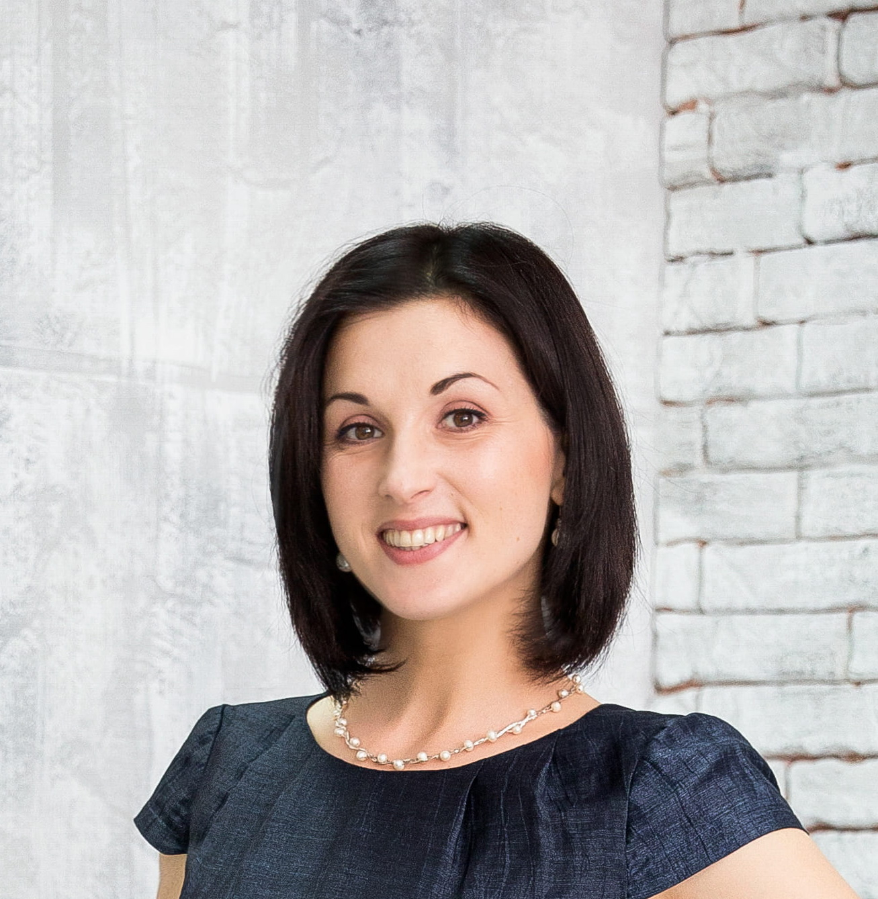
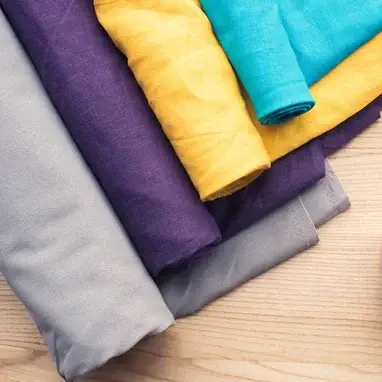

bei Liubov Mykhalchych
Professionelle Maß-, Braut- und
Änderungsschneiderei
Herzlich willkommen!
Wir fertigen hochwertige Damenbekleidung und Brautkleider nach Maß und übernehmen professionelle Änderungen sowie Reparaturen mit größter Sorgfalt.
In unserem Atelier entstehen Damen- und Hochzeitskleider in allen Stilrichtungen, individuell abgestimmt auf Ihre Wünsche und Ihren Körpertyp. Jedes Kleidungsstück wird nach Ihren Vorstellungen, Skizzen oder Referenzfotos angefertigt, unabhängig von Design oder Komplexität.
Wir bieten
Über das Modeatelier
Unser Atelier befindet sich in einem hellen und gemütlichen Salon im Herzen von Jena, in der Knebelstraße 3, im historischen Gebäude Villa am Paradies, direkt gegenüber dem Bahnhof Paradies und neben dem Busbahnhof.
Wir empfangen Sie persönlich und nehmen uns Zeit für Ihre Wünsche. Jedes Kleidungsstück entsteht in sorgfältiger Handarbeit mit höchstem Anspruch an Passform und Verarbeitung.
Qualität, Präzision und Liebe zum Detail stehen bei uns im Mittelpunkt. So entstehen einzigartige Kleidungsstücke, die individuell für Sie entworfen und gefertigt werden.
Gerne bringen Sie eigene Skizzen oder Ideen mit. Gemeinsam wählen wir Stoffe, Farben und Accessoires für Ihr persönliches Kleidungsstück aus.
Das Atelier hat mir sehr gut gefallen. Hell, sauber und gemütlich. Das freundliche und aufmerksame Personal unterstützt kompetent bei der Auswahl von Stoffen und Stil. Hervorragende Arbeitsqualität! Ich komme auf jeden Fall wieder. Sehr empfehlenswert!
Eine äußerst talentierte Handwerkerin. Sie hat bereits mehrere Stücke für mich genäht, alle in hervorragender Qualität. Man merkt, dass sie ihre Arbeit mit Leidenschaft ausführt. Ich kann sie allen empfehlen, die luxuriös aussehen möchten!
Ich habe mich vom ersten Moment an willkommen gefühlt. Der professionelle Umgang und die respektvolle, aufmerksame Art hinterlassen einen sehr positiven Eindruck. Ich kann das Modeatelier uneingeschränkt empfehlen!

Kleidung auf Bestellung
Maßgeschneiderte Kleidung ist eine besondere Form der Selbstdarstellung. Sie unterstreicht Ihren Stil, zeigt Ihre Persönlichkeit und hebt Ihre Vorlieben hervor. So entsteht ein individuelles Erscheinungsbild, das Ihren Geschmack und Ihre Figur optimal zur Geltung bringt. Mit unserer Unterstützung erhalten Sie Kleidung in Ihrem eigenen Stil, in der Sie sich selbstbewusst, wohl und harmonisch fühlen.

Einzigartigkeit
Maßgeschneiderte Kleidung bewahrt die Einzigartigkeit Ihres persönlichen Stils und sorgt dafür, dass Sie stets individuell auftreten. Sie können sich an Entwürfen bekannter Couturiers orientieren, ein Lieblingskleid nachschneidern lassen oder mehrere Designideen in einem Kleidungsstück vereinen.
Ein weiterer Vorteil: Sie müssen nicht befürchten, dass jemand bei einem Anlass dasselbe Kleid trägt wie Sie. Ihre Kleidung wird speziell für Sie gefertigt und hebt sich deutlich von der Massenware ab. Ihre Auswahl ist nicht an vorhandene Modelle im Geschäft gebunden. Alles, was Sie sich vorstellen, wird nach Ihren Wünschen genäht.
Wenn Sie im Internet oder in einem Modemagazin ein Modell entdecken und es perfekt an Ihre Figur anpassen möchten, bietet die Maßschneiderei die passende Lösung.
Hochwertige Materialien zum Nähen
Hochwertige Stoffe und sorgfältig ausgewählte Accessoires sind die Grundlage langlebiger und qualitativ hochwertiger Kleidung. Bei einer Maßanfertigung haben Sie die Möglichkeit, Stoffart, Struktur, Stärke und Farbgebung frei zu wählen.
Bevorzugt werden edle Naturstoffe wie Seide, Wolle, Baumwolle, Kaschmir, Leinen oder Denim. Sie sind hautfreundlich, angenehm zu tragen und lassen die Haut atmen. Im Vergleich zu synthetischen Materialien tragen sie sich komfortabler, behalten ihre Form und überzeugen durch ihre Langlebigkeit. Zudem wirkt Kleidung aus hochwertigen Naturstoffen sichtbar edler als vergleichbare Modelle aus synthetischen Fasern, die häufig in industrieller Massenproduktion verwendet werden und sich weniger angenehm anfühlen können.

Auf Bestellung gefertigte Kleidungsstücke aus hochwertigen Stoffen wirken wertiger, bereiten lange Freude und sind gesundheitlich unbedenklich.
Passt perfekt zur Figur
Was tun, wenn gekaufte Kleidung nicht richtig sitzt oder die Proportionen Ihrer Figur schwer mit Standardgrößen vereinbar sind? Wenn Brust, Taille, Hüfte und Körpergröße nicht ideal zueinander passen, ist Maßschneiderei die richtige Lösung.
Durch einen individuell erstellten Schnitt erreichen wir eine besonders präzise Passform. Für jeden Neukunden fertigen wir ein eigenes Schnittmuster an.
Dabei berücksichtigen wir alle Besonderheiten Ihrer Figur, betonen Ihre Vorzüge und gleichen kleine Unstimmigkeiten harmonisch aus. Wer einmal ein Kleidungsstück getragen hat, das speziell für ihn angefertigt wurde, möchte auf konfektionierte Kleidung meist nicht mehr zurückgreifen.

Dienstleistungen
Neue Kleidung nähen
Wir fertigen Damenbekleidung in vielfältigen Schnitten und Stilrichtungen, darunter Kleider, Blusen, Röcke, Anzüge, Hosen, Oberteile, Hemden, Jacken und Mäntel. Darüber hinaus nähen wir Abend- und Festbekleidung, Businessmode für Damen, Brautkleider und Brautkostüme, Show- und Bühnenkostüme, Vintage-Kleidung sowie Kleidung für Kinder.
Hochzeitskleid
In unserem elektronischen Katalog können Sie Brautkleider auswählen, die nach Standardkonfektionsgrößen gefertigt werden. Das Kleid wird für Sie angefertigt und entweder direkt an Ihre Adresse versendet oder im Atelier zur Abholung bereitgestellt. Bei Abholung passen wir das Kleid im Salon kostenlos an Ihre Maße an.
Bitte beachten Sie: Kleider aus unserem E-Katalog werden nicht als individuelle Maßanfertigung genäht.
So bestellen Sie: Schreiben Sie uns über das Kontaktformular auf dieser Seite. Bitte geben Sie Ihre Standard-Konfektionsgröße sowie Ihre Körpergröße an. Anschließend erhalten Sie eine Rückmeldung mit weiteren Informationen sowie den Zahlungsdetails. Für die Bestellung ist eine Anzahlung von 30 % des Gesamtbetrags erforderlich.
Die Anfertigungszeit beträgt je nach Aufwand etwa drei bis sechs Monate. Nach Fertigstellung informieren wir Sie und senden Ihnen ein Foto des Kleides zu. Nach Begleichung des Restbetrags versenden wir das Kleid oder Sie holen es persönlich im Atelier ab. Falls Anpassungen erforderlich sind, können diese vor Ort vorgenommen werden.
Wenn Sie ein exklusives Brautkleid nach Maß wünschen, fertigen wir dieses gerne individuell nach Ihren Maßen und berücksichtigen dabei all Ihre persönlichen Vorstellungen.
Änderungsschneiderei
Wir bieten professionelle Änderungen und Reparaturen mit hoher handwerklicher Qualität an. Ob Damen-, Herren- oder Kinderbekleidung, Businessmode, Braut- und Abendkleidung oder Heimtextilien, wir bearbeiten Kleidungsstücke jeder Art.
Unser Leistungsspektrum umfasst unter anderem Kürzen, Weiten, Enger- oder Längermachen, Reparaturen sowie die kreative Umgestaltung bestehender Kleidungsstücke. Aus Lieblingsstücken entstehen so neue, tragbare Designs. Für jedes Kleidungsstück finden wir eine passende und individuelle Lösung, auch bei anspruchsvollen Arbeiten.
Stoffe & Materialien
Gerne bestellen wir für Sie hochwertige Stoffe und passende Accessoires für Ihr Kleidungsstück. Qualitativ hochwertige Materialien sind die Grundlage langlebiger und wertiger Kleidung.
Wir arbeiten bevorzugt mit Naturstoffen wie Seide, Leinen, Wolle, Baumwolle, Kaschmir oder Denim sowie mit ausgewählten Premiumstoffen mit geringem Anteil synthetischer Fasern. Diese Materialien sind hautfreundlich, angenehm zu tragen, langlebig und wirken optisch besonders hochwertig.
Basierend auf Ihren Wünschen und Vorstellungen wählen wir gemeinsam den passenden Stoff aus. Sie können Materialien direkt in unserem Atelier auswählen oder uns kontaktieren, damit wir geeignete Stoffe gezielt für Sie bestellen.